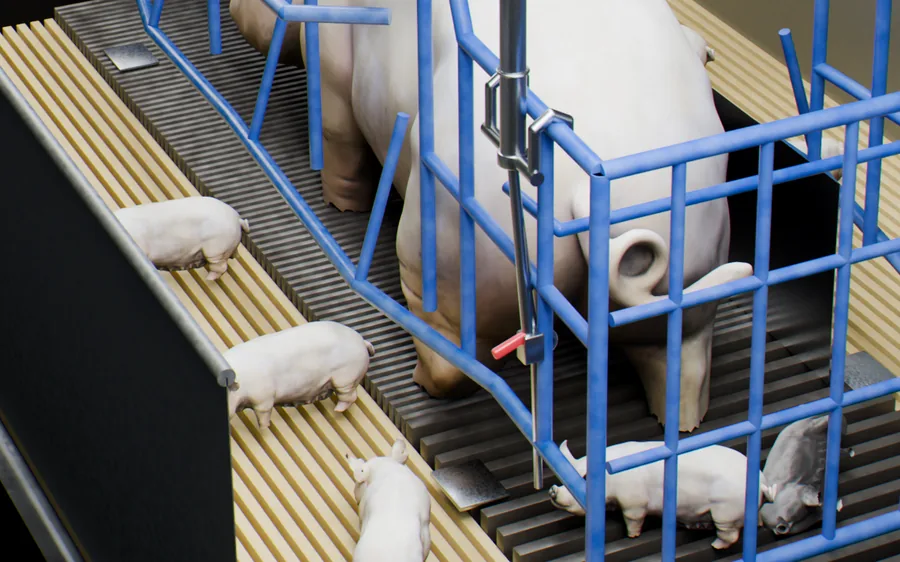
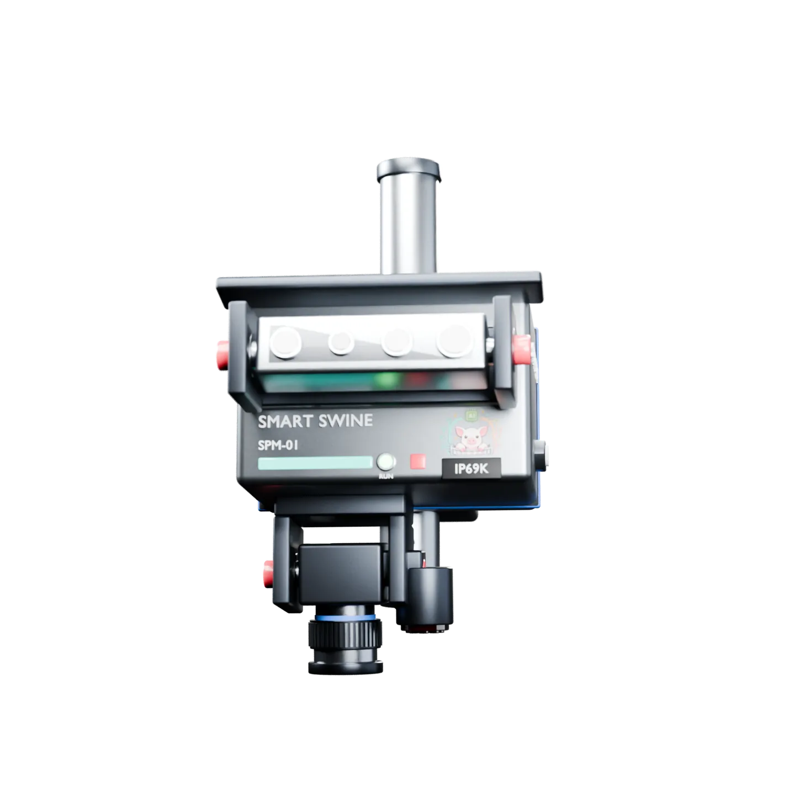
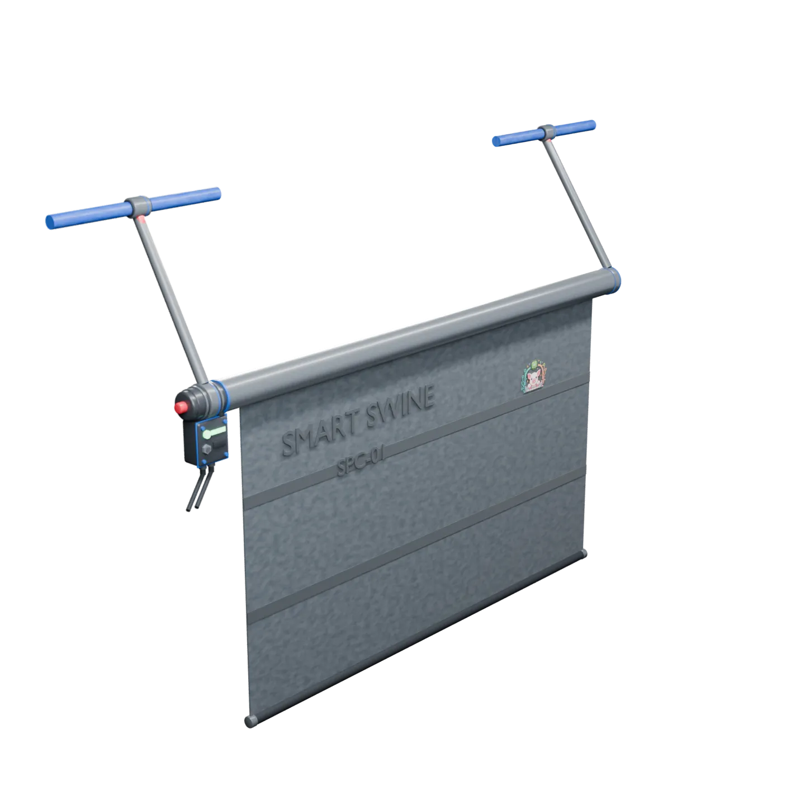

Alerts
The barn calls you
Real-time alerts to the herd team's phones for a stalled birth, a stillborn flag and a crushing-risk roll. An alert takes you straight to the crate that raised it.
Decide and manage
Every SPM-01 streams into the Smart Swine app: our own, built for the farrowing room.
In design

SOW · STANDING NEWBORN NEWBORN STILLBORN CRATE 07 · LIVE · 04:32BIRTHS PER NIGHT
AI NIGHT SUMMARY
14 piglets born across 3 sows. One stillborn in crate 07 at 04:32. Barn team alerted. Crate 12 showed repeated lateral-roll warnings. Check the sow before morning feed.
The Smart Swine app
The app comes with every SPM-01. It turns what the monitor sees into something a person can act on, at the crate or from the road.
Alerts
Real-time alerts to the herd team's phones for a stalled birth, a stillborn flag and a crushing-risk roll. An alert takes you straight to the crate that raised it.
Live view
Open the app and the sensor's video is live on your phone: from the office, the house or the road.
Farrowing timeline
A timeline for each crate with every birth and the interval between births, so a farrowing that has stalled is visible while someone can still help.
AI summary
The app pools video from every sensor and the AI writes the morning brief: births overnight, interventions that mattered, crates to check first. Read it with your first coffee instead of scrubbing footage.
Analytics
Births, birth intervals, posture patterns and alert history roll up into per-sow and per-room dashboards. Trends surface before they turn into losses, and everything exports.
Your data
Inference runs on the unit in the barn. The cloud carries only the alerts, the morning brief and the analytics, and the footage itself stays on the farm until you decide otherwise.
Software Pro
For integrators and multi-site systems. Software Pro ties the crates on every farm into one software layer, and connects to the herd-management system you already run through an API rather than replacing it.
Planned
Every farm and every room on one screen.
The same numbers the app shows a herd team, rolled up for a production team.
Each site set against the top 10% of farms.
Herd-management-system integration and an API, so it works with the records you already keep.
| Site | Crates watched | Farrowing now | Alerts | 7 nights |
|---|---|---|---|---|
| North · Room 2 | 48 | 6 | 3 | |
| North · Room 5 | 48 | 2 | 0 | |
| East · Room 1 | 36 | 4 | 1 | |
| East · Room 4 | 36 | 0 | 0 |
The rest of the system
Everything the app shows starts at the crate. SPM-01 is the sealed unit that does the seeing, and SPC-01 is the curtain that acts on it.

Detect
One sealed unit per crate with two optical axes, reading the sow and her newborn litter on the device.

Act
A motorized curtain on the crate that closes the danger zone the monitor has named, and lifts when it clears.
The fastest way to judge the system is to put a monitor on one crate. Trials are free this season.